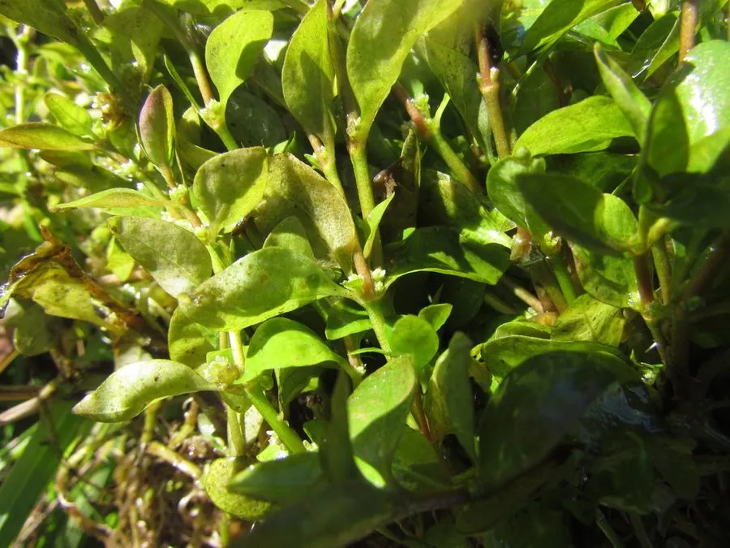

水生植物 · 植物界
血心兰 Alternanthera reineckii

苋科多年生水生草本，叶背紫红、茎节明显，原产南美沼泽，是水族箱中最经典的红色系中后景水草之一。
- 分类
- 门被子植物门纲木兰纲目石竹目科苋科属莲子草属
- 栖息环境
- 南美沼泽、河漫滩与浅水池塘，喜强光与温暖
- 地理分布
- 原产南美洲巴拉圭、巴西等地，现世界各地水族箱栽培
- 保护级别
- 暂无评估；栽培种群规模大
物种志
血心兰为苋科莲子草属多年生水生草本，茎直立，高 20–50 厘米，节明显，水中茎肉质。叶对生，披针形至椭圆形，长 3–8 厘米，水上叶正面绿色、背面紫红，水下叶常整体呈紫红至粉红，叶脉浅色。花小，白色或淡紫，密集成腋生头状花序，水上栽培时可见。
血心兰原产南美洲巴拉圭、巴西一带的沼泽与河漫滩，适宜水深 5–30 厘米，喜强光、充足二氧化碳与富含铁质的底床，水温 22–28 ℃。强光下顶芽与叶背呈鲜艳的紫红色，弱光时则转绿、茎节拉长，是判断光照是否充足的良好指示。它是水族造景中红色系中后景的主力，与绿色水草搭配可形成强烈对比。栽培以茎段扦插繁殖，剪取 10 厘米左右的顶枝插入底砂即可。
形态与习性
- 株高20–50 厘米，茎节明显
- 水深适宜水深 5–30 厘米，可挺水或沉水
- 水质喜软水，pH 6.0–7.0，需充足二氧化碳与铁肥
- 光照强光下叶色紫红，弱光则转绿徒长
- 底床肥沃底砂，需定期补充根肥与铁肥
- 繁殖茎段扦插，每段保留 3–4 节
趣味知识
- 血心兰的叶背比叶面红得多，从下方看整株呈紫红色，因此得名“血心”。
- 缺铁或缺二氧化碳时，它的新叶会发白、褪色，是水草缸的“营养指示器”。
- 水上栽培时它会开出白色小球状花序，水下则几乎不开花。
- 在原生地，它随水位涨落在水生与陆生形态间切换，茎节可长出不定根。